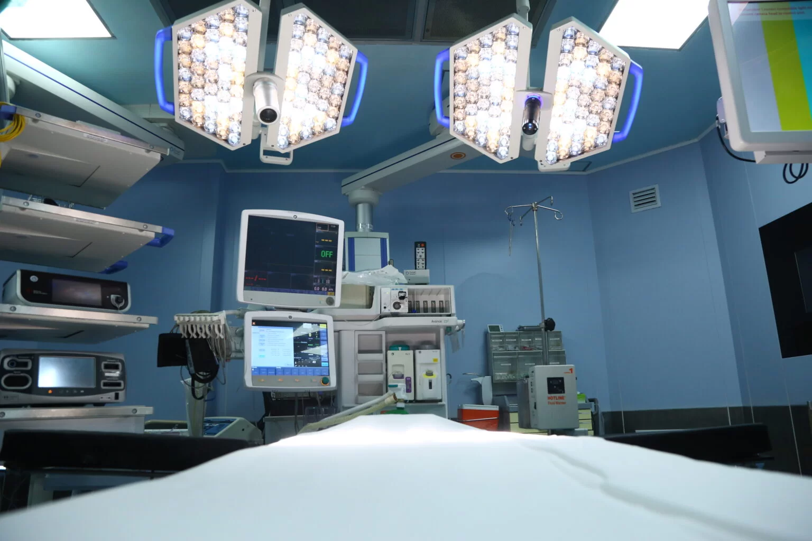
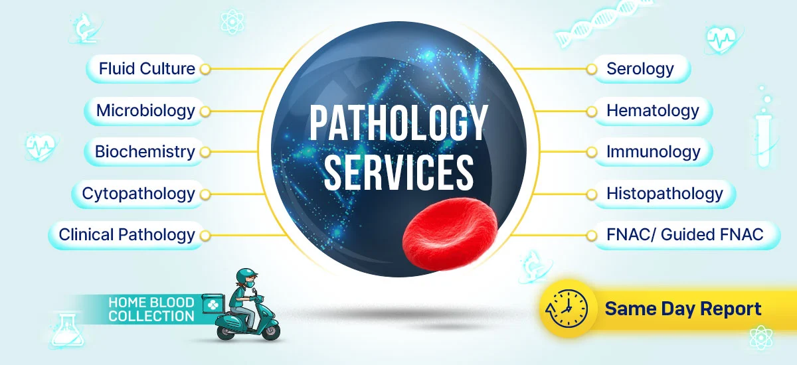

Departments Overview
SKMCH&RC provides medical, radiation, and surgical oncology with a multidisciplinary approach. Treatments are supported by state-of-the-art technology and compassionate care teams.
 Access to read about Oncology BrochureOur radiology department is equipped with MRI, CT, PET scans, and digital x-ray for precise diagnostics. We ensure high-quality imaging and timely reports to support effective treatments.
View Radiology Guide (PDF)Comprehensive pathology services including hematology, biochemistry, microbiology, and histopathology. Our labs are accredited and ensure high standards of accuracy and safety.
Advanced surgical units for tumor removals and cancer-related procedures with post-operative care. Our surgeons work closely with oncologists and radiologists to offer integrated care plans.
Tumor Removal: State-of-the-art surgical procedures for removing malignant tumors with precision.
Post-operative Care: Specialized support and monitoring for faster patient recovery. Palliative care nurses specialise in comforting patients and their family members during one of the most difficult phases of life. They are trained to provide holistic care to patients receiving palliative care. They assist the palliative care physicians in providing the best possible care to patients
Team Collaboration: Multidisciplinary approach with oncologists and radiologists to enhance treatment effectiveness.Team collaboration in healthcare is built on essential components like communication, trust, and conflict resolution. Interprofessional collaboration further amplifies these values, bringing together diverse expertise to tackle challenges head-on
Specialized pediatric oncology services with child-friendly environments and tailored treatment plans. We ensure emotional and medical support for both children and their families.
Learn More About Pediatric Oncology (PDF)